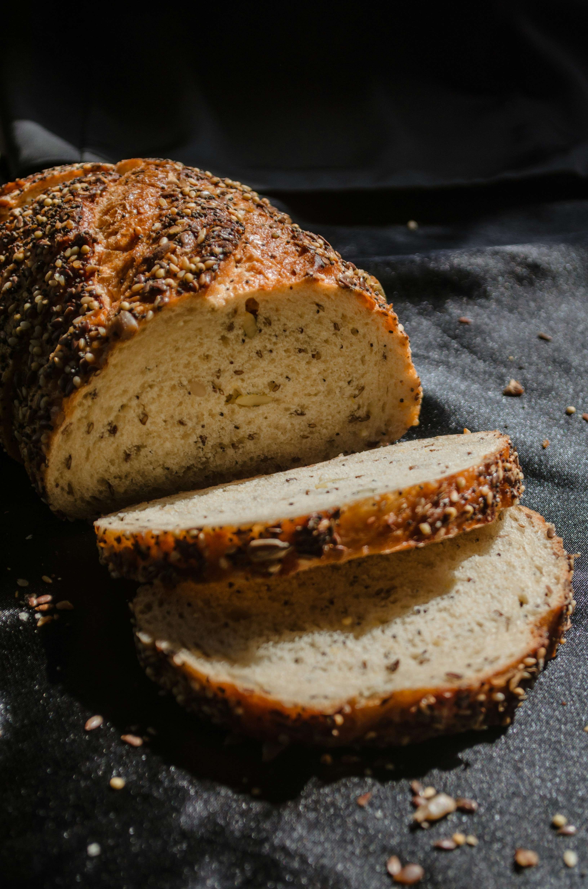

Agua (tibia o a temperatura ambiente): 350 g (70% de hidratación)
Masa madre activa (al pico de fermentación): 100 g (20%)
Sal fina: 10 g (2%)
Paso a Paso
Autólisis: Mezcla la harina y 325 g de agua en un bol hasta que no quede harina seca. Cubre y deja reposar durante 30 a 45 minutos.Incorporación: Agrega la masa madre activa y amasa suavemente hasta integrar. Añade los 25 g de agua restantes junto con la sal. Amasa hasta obtener una masa uniforme.Fermentación en bloque y pliegues: Cubre el bol. Durante las primeras 2 horas, realiza 4 tandas de pliegues (estirando los bordes hacia el centro) cada 30 minutos. Luego, deja reposar la masa hasta que aumente un 30-50% su volumen.Formado: Vuelca la masa sobre una superficie ligeramente enharinada, dales forma redonda (hogaza) generando tensión en la superficie y colócala en un banetón o bol con un repasador enharinado.Fermentación en frío: Llévala a la heladera (4 °C) entre 12 y 18 horas para desarrollar sabor y estructura.Horneado: Precalienta el horno a 230 °C con una olla de hierro (Dutch oven) dentro. Vuelca el pan sobre papel manteca, realiza un corte profundo (greña) en la parte superior e introdúcelo en la olla. Hornea con tapa durante 20 minutos, luego quita la tapa, baja a 200 °C y hornea 20-25 minutos más hasta dorar la corteza.Enfriado: Deja enfriar completo sobre una rejilla antes de cortar.
Hogaza Integral con Semillas

Hogaza de pan integral rebanada sobre una tela
Ingredientes
Harina integral de trigo: 300 g
Harina de trigo 000 (de fuerza): 200 g
Agua: 375 g (75% de hidratación)
Masa madre activa: 100 g (20%)
Sal fina: 10 g (2%)
Mix de semillas (girasol, sésamo, lino, zapallo): 80 g (más extra para decorar)
Paso a Paso
Activación de semillas: Hidrata el mix de semillas en 50 g de agua tibia durante 20 minutos antes de empezar y escúrrelas bien.
Autólisis: Mezcla las dos harinas con los 375 g de agua. Deja reposar tapado durante 45 minutos para ablandar la fibra del trigo integral.
Integración: Agrega la masa madre activa y mezcla bien. Añade la sal e integra hasta tener una masa homogénea.
Inclusión de semillas y pliegues: Durante las primeras 2 horas de fermentación, realiza 3 tandas de pliegues cada 30 minutos. En el segundo pliegue, distribuye las semillas hidratadas sobre la masa para incorporarlas de forma uniforme.
Fermentación en bloque: Deja reposar la masa a temperatura ambiente hasta que crezca alrededor de un 40% y se note aireada.
Formado y rebozado: Da forma de hogaza generando buena tensión superficial. Pasa la parte superior por un paño húmedo y luego sobre un plato con semillas extra para que se peguen a la corteza. Coloca en un banetón enharinado.
Retardo en frío: Guarda en la heladera (4 °C) de 12 a 16 horas.
Horneado: Precalienta el horno a 230 °C con olla de hierro dentro. Realiza un corte (greña) al pan, colócalo en la olla y hornea tapado durante 25 minutos. Destapa, baja la temperatura a 200 °C y hornea 20 minutos más hasta que las semillas estén tostadas y la corteza crujiente.
Enfriado: Deja enfriar por completo en rejilla antes de rebanar.